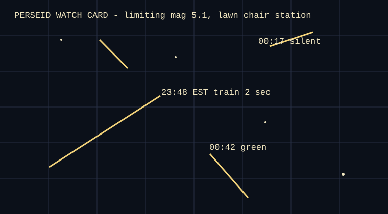

Perseid watch, probably 1982. Station: south lawn, blanket over knees, thermos cap lost. The card's grid is not celestial precision; it is a way to keep tired eyes honest.
| Time EST | Direction | Brightness | Train |
|---|---|---|---|
| 23:48 | NW → SE | -1 | 2 sec |
| 00:17 | NE short | +2 | none |
| 00:42 | S → low E | 0, green | 4 sec |
Last note on reverse: “owl at 01:06, not counted.”